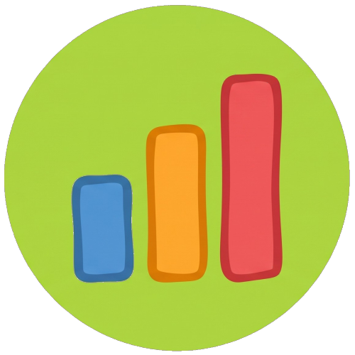

Octopus EXIF AnalyzerここにJPEG写真 または フォルダをドラッグ＆ドロップ
JPEG (.jpg / .jpeg) 対応（PC: 最大3,000枚 / スマホ: 最大100枚）
分析対象にしたい「カメラ ✕ レンズ」の組み合わせにチェックを入れてください。
複数チェックすると同一母集団として合算されます（※異なるズームレンズが混ざった場合、両端依存度の診断は安全のため自動的にスキップされます）。
選択された機材のセンサーサイズ（クロップ係数）を確認・変更します。
写真のExifメタデータに「35mm換算焦点距離」が記録されている機材（スマホや一部ミラーレス等）は自動採用されるため、手動設定は不要です。
| カメラ / レンズ機種 | 換算方式 / センサーサイズ / クロップ係数 |
|---|
※ 異なるセンサーサイズ（フルサイズとMFTなど）の写真を混在して分析する場合は、「35mm判換算」の選択を推奨します。
ズームレンズの両端（最も広い画角・最も望遠の画角）のスペック数値です。Exifから自動判別されますが、必要に応じて手動で微調整できます（※単焦点やスマホは自動確定されロックされます）。
| レンズ機種 | 広角端 (mm) | 望遠端 (mm) |
|---|
選択された写真群全体の母集団、ズーム両端への依存度、および最も多用されている露出パラメータの概要です。
焦点距離の分布や露出設定の傾向を視覚化したグラフです。上部のタブを切り替えて各パラメータの偏りを確認できます。
集計データをまとめたAI相談用テキストです。「📋 プロンプトをコピー」ボタンを押し、ChatGPTやClaude、Geminiなどの生成AIにそのまま貼り付けて送信してください。
あなたの構図の癖や、描写力向上のために買い足すべき「最適な単焦点レンズ」などの客観的な講評を受け取れます。